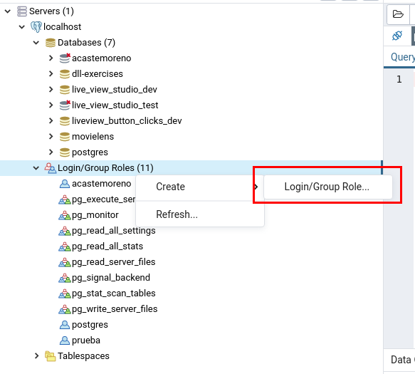
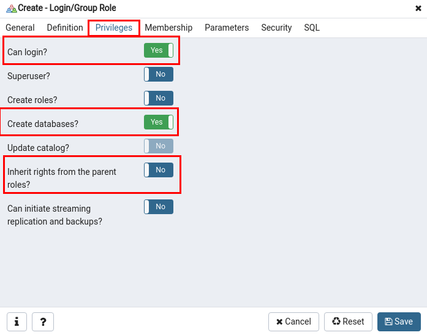

Con el usuario crearemos una base de datos
Con el usuario crearemos una base de datos

Setear

Usando al usuario anteriormente creado
$ psql -h localhost -d postgres -U amiguito -W # Se creara un prompt para escribir la contraseña del usuario Password: . . . postgres=> CREATE DATABASE "reforfamiento-sql"; CREATE DATABASE
require 'pg'
conn = PG.connect(dbname: 'postgres', host: "localhost",
user: "amiguito", password: "123456789")
conn.exec('CREATE DATABASE "reforfamiento-sql"')
[] significa optional
CREATE TABLE [IF NOT EXISTS] mytable (
<column_name> <DataType> [Constraint] [DEFAULT default_value],
<another_column> <DataType> [AnotherConstraint] [DEFAULT default_value],
…
);
Los mas comunes
CREATE TABLE IF NOT EXISTS timetracker(); CREATE TABLE IF NOT EXISTS "User"( "id" SERIAL PRIMARY KEY, "name" VARCHAR(25) NOT NULL, "email" VARCHAR(25) NOT NULL, "role" VARCHAR(20) NOT NULL, "rate" INTEGER CHECK (rate >= 0) ); CREATE TABLE IF NOT EXISTS "Project"( "id" SERIAL PRIMARY KEY , "name" VARCHAR(25) NOT NULL, "category" VARCHAR(25) NOT NULL, "start" DATE NOT NULL, "end" DATE NOT NULL, "closed" BOOLEAN NOT NULL DEFAULT false );
require 'pg'
conn = PG.connect(dbname: 'reforfamiento-sql', host: "localhost",
user: "amiguito", password: "123456789")
conn.exec('
CREATE TABLE IF NOT EXISTS timetracker();
')
conn.exec('
CREATE TABLE IF NOT EXISTS "User"(
"id" SERIAL PRIMARY KEY,
"name" VARCHAR(25) NOT NULL,
"email" VARCHAR(25) NOT NULL,
"role" VARCHAR(20) NOT NULL,
"rate" INTEGER CHECK (rate >= 0)
);
')
conn.exec('
CREATE TABLE IF NOT EXISTS "Project"(
"id" SERIAL PRIMARY KEY ,
"name" VARCHAR(25) NOT NULL,
"category" VARCHAR(25) NOT NULL,
"start" DATE NOT NULL,
"end" DATE NOT NULL,
"closed" BOOLEAN NOT NULL DEFAULT false
);
')
Gracias ˊ・ω・ˋ